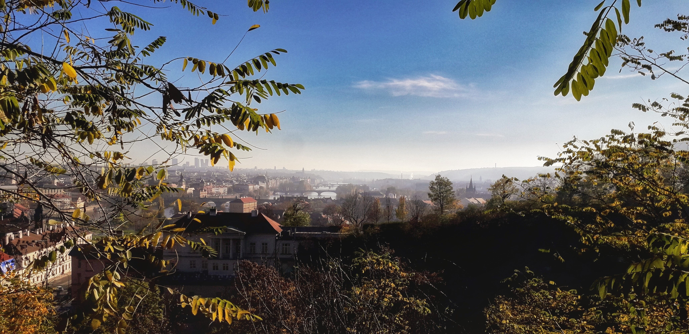
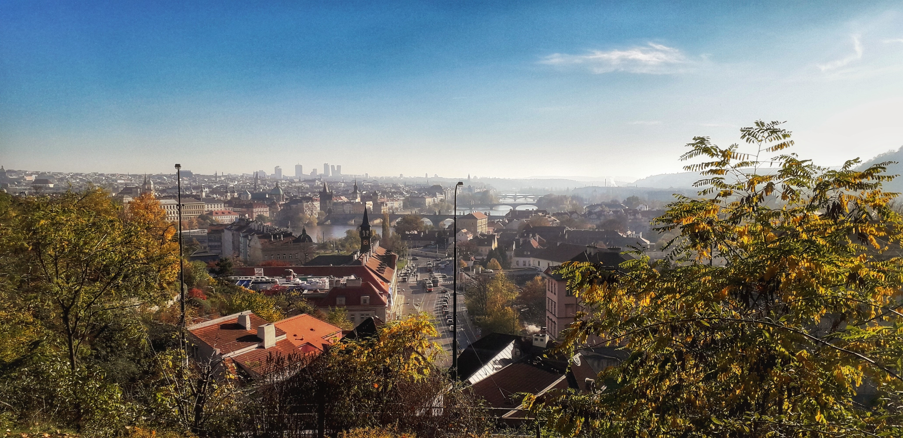
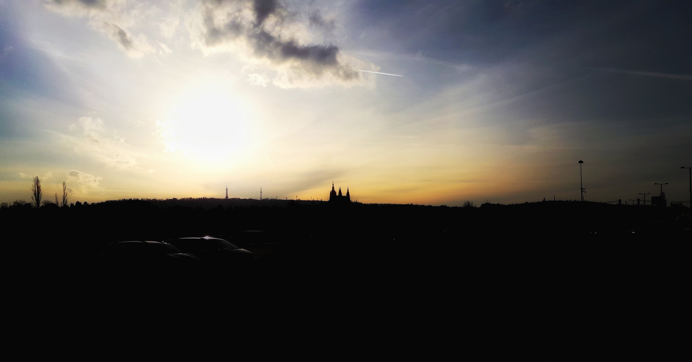
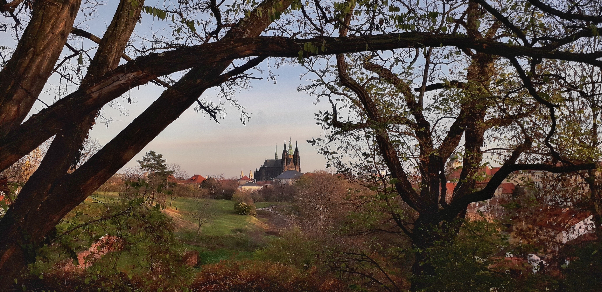
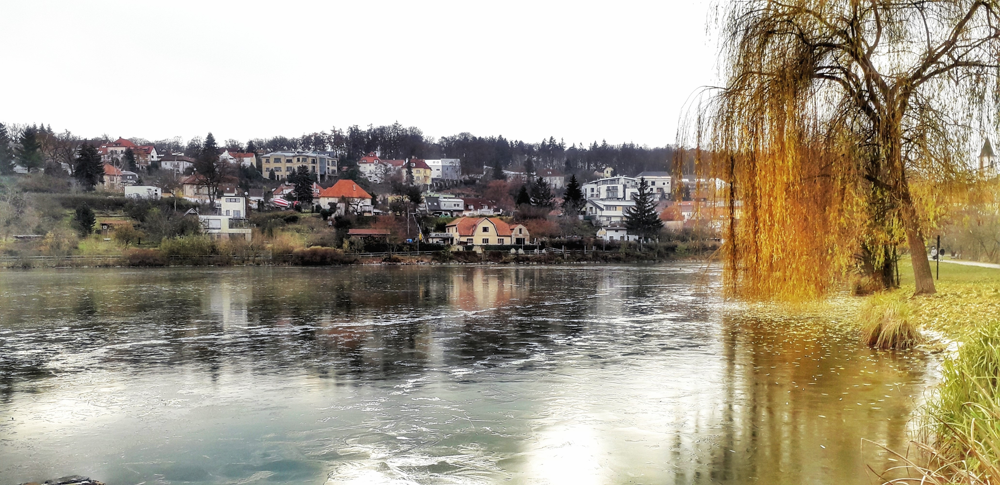
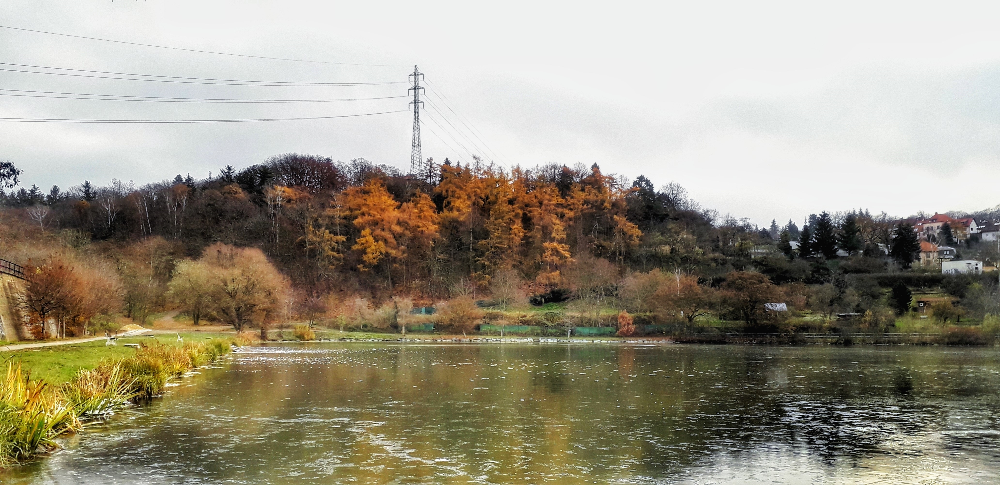
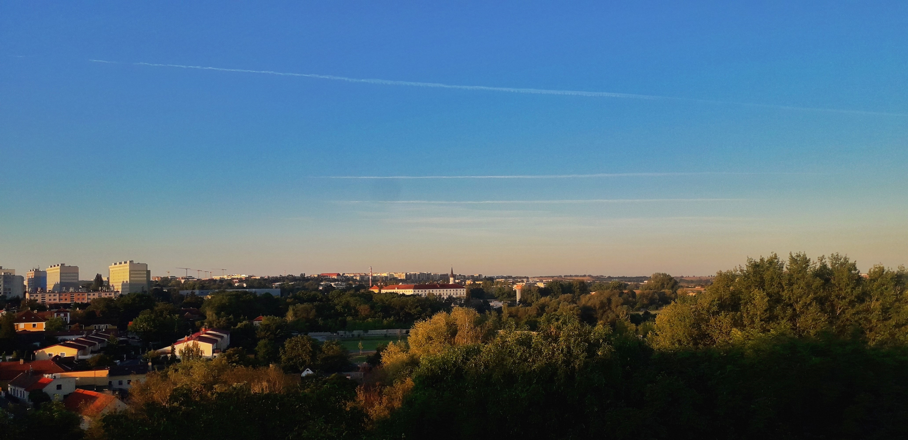
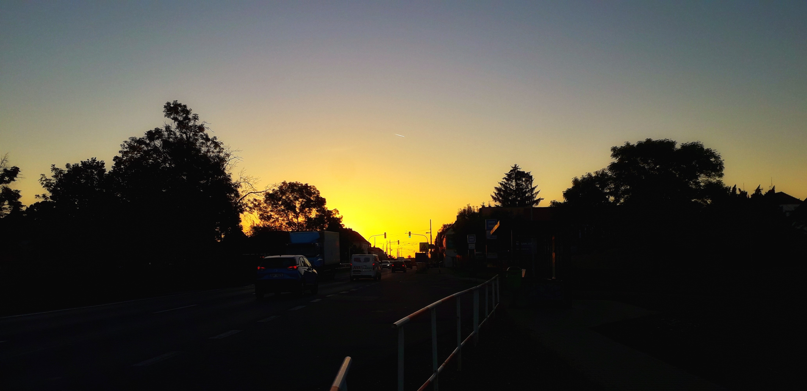
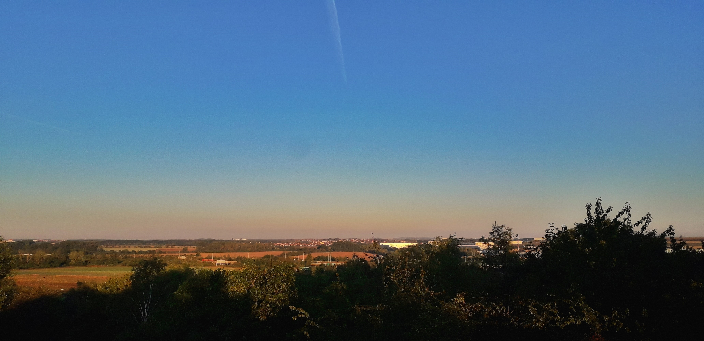

Publikováno: 30. září 2025 │ Autor: Martin · 3 min čtení
Podzim umí ztišit i město. Listy šeptají, mosty mizí v oparu a z ruchu zůstane jen vzdálený šum.
Když víš, kde stát, ticho si tě najde – i uprostřed Prahy. Dýcháš. Díváš se. Nehoníš se.
Klid nezačíná za městem. Začíná v tobě.

Nad hlavou listy, pod tebou město. Mezi tím místo pro dech.

Město se nadechne, když ho vidíš z nadhledu.Stíny jsou delší, kroky kratší. Hlava tichá.

Kořeny a trvání. Hrad jako metronom času.

Rám z větví. Okno do ticha uprostřed města.

Řeka si pamatuje víc, než stihneš říct.

Barvy drží náladu, i když je obloha těžká.

Šířka, ve které se starosti zmenší na rozumnou velikost.

Ruch nespí. Ale ty si můžeš vybrat ticho.

Okraj města. Hrana, kde se dá nadechnout do plných.